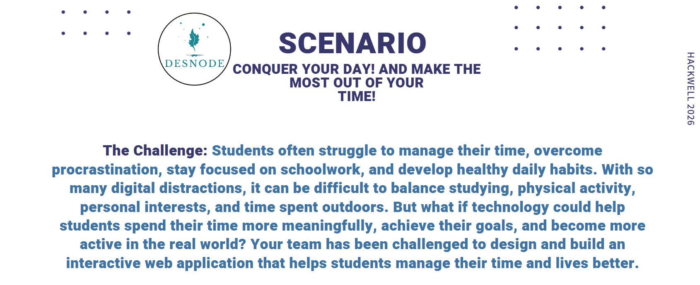

Conquer your day. Make the most of your time.
The challenge
Students often struggle to manage their time, overcome procrastination, stay focused on schoolwork, and develop healthy daily habits. With so many digital distractions, it can be difficult to balance studying, physical activity, personal interests, and time spent outdoors. But what if technology could help students spend their time more meaningfully, achieve their goals, and become more active in the real world? Your team has been challenged to design and build an interactive web application that helps students manage their time and lives better.